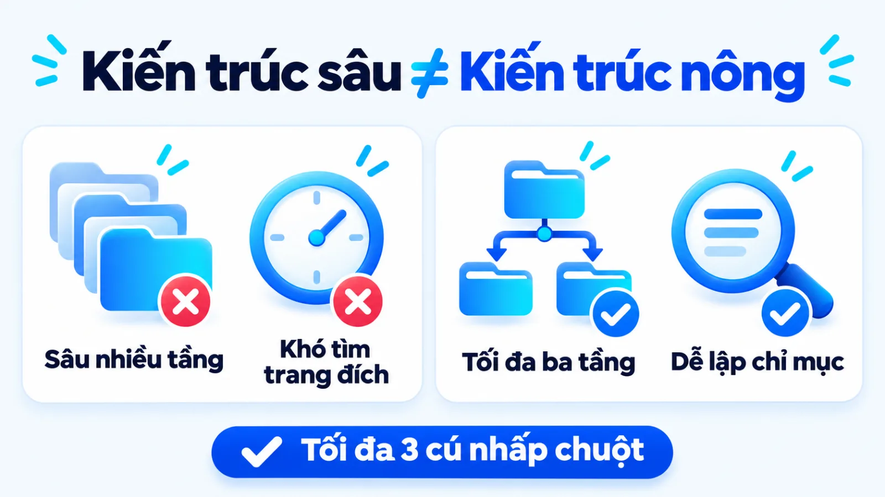
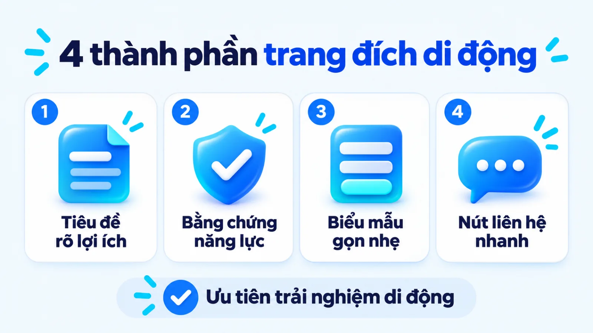
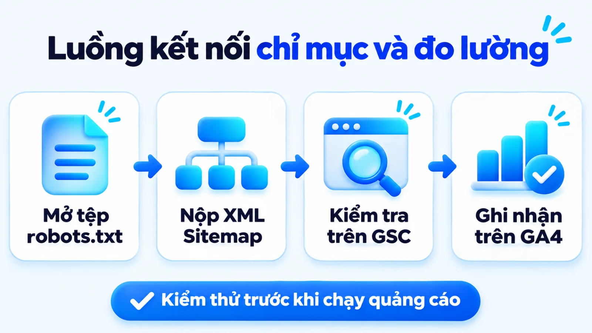
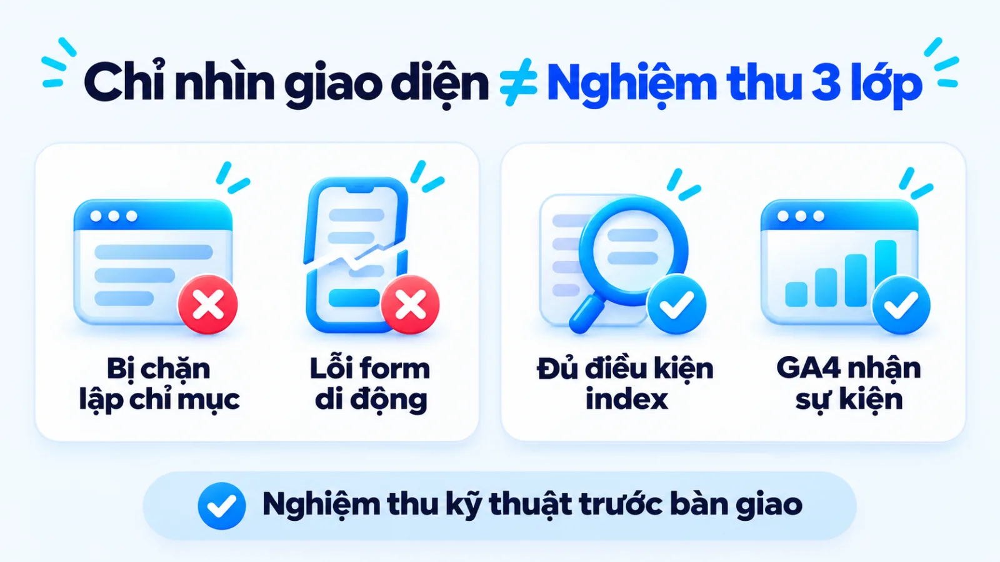
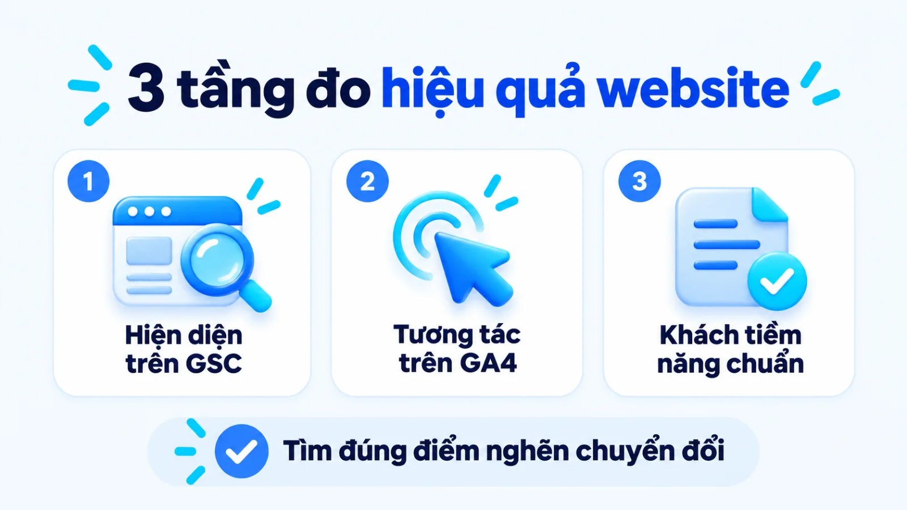

Cách tạo website chuẩn chuyển đổi cho SME
Cách tạo website là quy trình thiết lập bốn thành phần hạ tầng gồm tên miền, máy chủ lưu trữ có bảo mật HTTPS, hệ quản trị nội dung và cấu trúc trang đích gắn đo lường để doanh nghiệp thu hút khách hàng. Với doanh nghiệp vừa và nhỏ còn mỏng về nhân sự kỹ thuật, chọn sai phương thức triển khai từ đầu dễ khiến trang web chỉ có giao diện trưng bày mà không thu được dữ liệu người mua. Khi kết nối việc dựng khung hiển thị với thiết kế điểm chạm chuyển đổi và kiểm định lập chỉ mục, đội ngũ mới tránh được rủi ro đổ tiền quảng cáo vào trang đích bị chặn tìm kiếm. Tôi là Lê Tuấn Việt, Marketing Leader tại TAKI Group. Trong bài viết này, tôi phân tích tiêu chí chọn cách làm web khớp nguồn lực, các bước hoàn thiện hạ tầng và cách đọc chỉ số chuyển đổi phục vụ kinh doanh.
- Đăng ngày
- Cập nhật

Tóm tắt nhanh
- Một trang web kinh doanh vận hành ổn định cần đủ bốn thành phần hạ tầng gồm tên miền thương hiệu, máy chủ lưu trữ kích hoạt HTTPS, nền tảng quản trị nội dung và cấu trúc trang đích gắn mã đo lường.
- Doanh nghiệp vừa và nhỏ nên chọn giữa hệ quản trị mã nguồn mở, nền tảng thuê bao dựng sẵn, ứng dụng AI kết hợp Vibe Coding có người kiểm duyệt hoặc thuê đơn vị ngoài dựa trên quyền sở hữu dữ liệu và năng lực bảo trì.
- Quy trình triển khai sáu bước phải đi kèm đầu ra nghiệm thu kỹ thuật ở từng chặng, đặc biệt là kiểm tra giao diện di động, tệp robots.txt và trạng thái lập chỉ mục trên Google Search Console trước khi chạy quảng cáo.
- Hiệu quả của website mới cần được đọc theo ba tầng từ khả năng hiển thị trên công cụ tìm kiếm, hành vi tương tác vi mô trên trang đến số lượng khách hàng tiềm năng đạt chuẩn trong cùng kỳ đo.
Mục lục bài viết8 phần
Cách tạo website là gì và điều kiện cần chuẩn bị
Cách tạo website là quy trình thiết lập bốn thành phần hạ tầng gồm tên miền định danh, máy chủ lưu trữ có giao thức HTTPS (Hypertext Transfer Protocol Secure, giao thức truyền tải siêu văn bản bảo mật), hệ quản trị nội dung và cấu trúc trang đích gắn đo lường để SME (doanh nghiệp vừa và nhỏ) thu hút và chuyển đổi khách hàng.
Đặt trong bức tranh Marketing cho doanh nghiệp, một trang web không chỉ là cuốn hồ sơ giới thiệu tĩnh mà là trạm trung chuyển kết nối lưu lượng truy cập với đội ngũ bán hàng. Để hệ thống marketing tổng thể vận hành trơn tru, người phụ trách cần nắm rõ bốn cấu phần kỹ thuật bắt buộc và phân biệt ranh giới giữa việc dựng giao diện hiển thị với việc thiết kế điểm chạm chuyển đổi.
Bốn thành phần hạ tầng bắt buộc của một trang web
Theo tài liệu kỹ thuật cập nhật năm 2025 của MDN Web Docs (Mozilla), tên miền cung cấp địa chỉ dễ đọc cho con người để truy cập vào bất kỳ máy chủ nào trên Internet thay vì phải nhớ chuỗi số IP (Internet Protocol, giao thức liên mạng). Cùng với máy chủ lưu trữ web và CMS (Content Management System, hệ quản trị nội dung), bốn thành phần hạ tầng bắt buộc của một trang web gồm các hạng mục dưới đây.
- Tên miền thương hiệu: Địa chỉ định danh gắn liền với tên công ty trên trình duyệt, do doanh nghiệp đứng tên chủ sở hữu hợp pháp.
- Máy chủ lưu trữ và HTTPS: Không gian máy chủ chứa tệp mã nguồn, hình ảnh, dữ liệu web kèm chứng chỉ SSL (Secure Sockets Layer, lớp cổng bảo mật).
- Hệ quản trị nội dung (CMS): Phần mềm quản lý hoặc khung mã nguồn giúp đội ngũ đăng bài viết và tạo trang đích mà không phải sửa mã tay.
- Cấu trúc trang và mã đo: Sơ đồ phân cấp danh mục, nội dung giải quyết nhu cầu người mua cùng hệ thống thẻ theo dõi hành vi chuyển đổi.
Phân biệt dựng giao diện với thiết kế điểm chuyển đổi
Nhiều chủ doanh nghiệp đồng nhất việc làm xong một giao diện đẹp mắt trên máy tính với việc đã có kênh bán hàng trực tuyến hoàn chỉnh. Dựng giao diện chỉ giải quyết phần nhìn, trong khi thiết kế điểm chuyển đổi tập trung vào luồng dẫn dắt người xem từ lúc đọc thông tin đến khi để lại dữ liệu liên hệ hoặc đặt đơn. Muốn thiết kế luồng này sát thực tế, doanh nghiệp cần lập bản đồ hành trình khách hàng trước khi bố trí từng trang đích.
Khi trang đích được cấu trúc rõ ràng kèm biểu mẫu hợp lý, doanh nghiệp mới chủ động thu thập dữ liệu bên thứ nhất thay vì phụ thuộc hoàn toàn vào thuật toán phân phối của mạng xã hội. Ngược lại, nếu doanh nghiệp chỉ mới thử nghiệm một sản phẩm ngắn hạn chưa rõ sức mua và chưa có nhân sự cập nhật nội dung hàng tháng, tôi khuyến nghị dùng một trang đích đơn lẻ hoặc kênh mạng xã hội để kiểm chứng nhu cầu trước khi đầu tư website đa tầng.
Chọn cách làm website theo nguồn lực của SME
Doanh nghiệp vừa và nhỏ nên chọn một trong bốn cách làm website gồm hệ quản trị mã nguồn mở, nền tảng dựng sẵn dạng thuê bao SaaS (Software as a Service, phần mềm dạng dịch vụ), ứng dụng AI (Artificial Intelligence, trí tuệ nhân tạo) kết hợp Vibe Coding có người kiểm duyệt hoặc thuê đơn vị chuyên trách dựa trên ngân sách, thời gian ra mắt và năng lực bảo trì nội bộ.
Bảng chọn CMS, SaaS, Vibe Coding và thuê đơn vị ngoài
Trước khi ký hợp đồng thiết kế hay mua gói phần mềm, người phụ trách cần cân nhắc quyền sở hữu mã nguồn, khả năng mở rộng SEO (Search Engine Optimization, tối ưu hóa công cụ tìm kiếm) và nhân sự vận hành. Bảng dưới đây đối chiếu bốn phương thức làm web phổ biến theo điều kiện phù hợp và sự đánh đổi vận hành.
| Phương thức | Phù hợp khi | Đánh đổi vận hành |
|---|---|---|
| CMS mã nguồn mở | Cần làm chủ mã nguồn, mở rộng nội dung SEO dài hạn và tối ưu linh hoạt | Phải tự quản lý hosting, cập nhật bảo mật định kỳ và kiểm soát tốc độ tải |
| Nền tảng SaaS | Cần mở gian hàng nhanh, ít nhân sự kỹ thuật, muốn gói gọn bảo trì máy chủ | Phụ thuộc khung tính năng của nhà cung cấp và tốn phí thuê bao định kỳ |
| AI và Vibe Coding | Cần dựng nhanh website hoặc trang đích tùy biến với chi phí phát triển thấp | Bắt buộc có người hiểu kỹ thuật và marketing kiểm duyệt cấu trúc, bảo mật cuối |
| Thuê đơn vị ngoài | Có ngân sách đầu tư ban đầu, cần giao diện riêng và luồng nghiệp vụ đặc thù | Thời gian nghiệm thu lâu hơn và phát sinh chi phí khi cần sửa đổi cấu trúc |
Giới hạn khi đọc bảng: chi phí và tốc độ triển khai thực tế phụ thuộc vào độ phức tạp của danh mục sản phẩm cùng mức độ chuẩn bị nội dung gốc từ phía doanh nghiệp. Trong các dự án ứng dụng AI và Vibe Coding do tôi triển khai để xây dựng 5 website cùng hệ thống quản trị vận hành, phương thức này giúp khách hàng rút ngắn 90% thời gian hoặc tiết kiệm 95% chi phí phát triển, đồng thời chuẩn hóa quy trình cho hơn 50 doanh nghiệp, nhưng con người luôn phải giữ bước kiểm duyệt cấu trúc và bảo mật cuối.
Đánh đổi của cách làm web miễn phí khi kinh doanh
Nhiều đơn vị mới khởi sự tìm đến cách làm web miễn phí thông qua các công cụ tạo trang gắn tên miền phụ của nhà cung cấp hoặc gói lưu trữ không thu phí. Lựa chọn này giúp thử nghiệm thao tác đăng bài mà không tốn vốn ban đầu, nhưng lại tạo ra ba rào cản lớn khi bước vào thương mại thực tế.
Thứ nhất, địa chỉ trang web bị gắn đuôi thương hiệu của nền tảng khác làm giảm độ tin cậy khi giao dịch. Thứ hai, các gói miễn phí thường khóa quyền can thiệp tệp cấu hình tìm kiếm và giới hạn gắn mã đo lường chuyên sâu khi phối hợp bán hàng online đa kênh. Thứ ba, doanh nghiệp không sở hữu độc lập dữ liệu khách hàng và có nguy cơ mất trang khi nền tảng đổi chính sách.
Khi cần xác định lộ trình đầu tư hạ tầng khớp với mục tiêu tăng trưởng, việc tham khảo tư vấn chiến lược marketing giúp chủ doanh nghiệp tính đúng điểm hòa vốn thay vì chọn phương án miễn phí rồi phải đập đi xây lại.
Cách tạo một trang web: 3 bước dựng hạ tầng
Ba bước dựng hạ tầng đầu tiên trong cách tạo một trang web gồm chốt mục tiêu chuyển đổi kèm sơ đồ cấu trúc nông, đăng ký tên miền kết nối máy chủ lưu trữ có chứng chỉ bảo mật HTTPS, và cài đặt nền tảng quản trị với giao diện tương thích thiết bị di động. Hoàn tất ba bước này giúp trang có khung kỹ thuật chuẩn trước khi đưa nội dung lên.

Bước 1: Chốt mục tiêu chuyển đổi và cấu trúc trang
Hãy xác định hành động chính mà bạn muốn khách truy cập thực hiện như gửi biểu mẫu báo giá, đặt lịch hẹn hay mua hàng trực tiếp, rồi mới vẽ sơ đồ các nhóm trang phục vụ hành động đó. Báo cáo phân tích khả năng sử dụng năm 2013 của Kathryn Whitenton trên Nielsen Norman Group tại Mỹ chỉ ra rằng cấu trúc phân cấp quá sâu làm người dùng khó tìm thông tin hơn, trong khi kiến trúc phân cấp nông hơn với nhãn danh mục cụ thể giúp người truy cập dễ hiểu và định hướng nhanh hơn.
Cùng với sơ đồ phân cấp nông, tài liệu kỹ thuật cập nhật năm 2024 của Google Search Central khuyến nghị dùng từ ngữ mô tả rõ chủ đề và dùng dấu gạch ngang để tách các từ trong đường dẫn URL (Uniform Resource Locator, địa chỉ định vị tài nguyên thống nhất) giúp cả người đọc lẫn công cụ tìm kiếm nhận diện nội dung dễ dàng.
Đầu ra: sơ đồ cấu trúc trang phân cấp nông có nhãn danh mục rõ ràng và quy ước đặt đường dẫn URL dùng dấu gạch ngang nhất quán.
Bước 2: Đăng ký tên miền và thuê hosting kèm SSL
Chọn tên miền ngắn gọn trùng với tên thương hiệu, sau đó trỏ bản ghi DNS (Domain Name System, hệ thống phân giải tên miền) về địa chỉ máy chủ lưu trữ đã thuê. Ngay khi kết nối thành công, kỹ thuật viên cần kích hoạt chứng chỉ bảo mật SSL và thiết lập chuyển hướng vĩnh viễn toàn bộ truy cập từ giao thức HTTP sang HTTPS để mã hóa dữ liệu người dùng và bảo toàn tín hiệu xếp hạng.
Đầu ra: tên miền chính thức truy cập ổn định qua giao thức bảo mật https:// trên trình duyệt và không xuất hiện cảnh báo nội dung hỗn hợp.
Bước 3: Cài nền tảng và khung tự thiết kế website
Tiến hành cài đặt hệ quản trị nội dung như WordPress hoặc khởi tạo khung giao diện đã chọn ở mục trước. Tài liệu hướng dẫn cập nhật năm 2024 của Google Search Central khẳng định Google chủ yếu sử dụng phiên bản di động của nội dung, được thu thập bằng trình giả lập điện thoại thông minh, để lập chỉ mục và xếp hạng trang. Vì vậy, khi tự thiết kế website, giao diện bắt buộc phải thích ứng mượt trên màn hình dọc và giữ đầy đủ nội dung trọng tâm.
Đầu ra: khung giao diện hiển thị đồng nhất giữa máy tính và điện thoại, chữ đọc rõ và nút bấm dễ thao tác bằng ngón tay.
Cách lập trang web công ty: 3 bước hoàn thiện
Sau khi dựng xong khung kỹ thuật, cách lập trang web công ty đi tiếp qua ba bước hoàn thiện gồm biên tập nhóm nội dung trụ cột kèm biểu mẫu thu thông tin, khai báo sơ đồ trang trên Google Search Console cùng sự kiện GA4 (Google Analytics 4), và kiểm thử toàn diện trạng thái lập chỉ mục trước khi kéo lưu lượng truy cập.

Bước 4: Đăng tải nội dung trụ cột và biểu mẫu thu lead
Biên tập nhóm trang cốt lõi gồm trang chủ nêu rõ đề nghị giá trị, trang giới thiệu năng lực, trang chi tiết dịch vụ hoặc sản phẩm và trang liên hệ có thông tin tên, địa chỉ, số điện thoại đồng nhất. Cẩm nang khởi đầu SEO năm 2024 của Google Search Central khuyến nghị gom các trang cùng chủ đề vào thư mục hợp lý để bộ máy tìm kiếm hiểu cấu trúc và tần suất cập nhật của từng khu vực trên trang.
Khi triển khai xây dựng nội dung nền tảng và áp dụng quy trình viết content marketing cho từng trang dịch vụ, hãy đặt biểu mẫu đăng ký ở vị trí dễ thấy với số trường thông tin vừa đủ để giảm ma sát cho khách hàng tiềm năng (lead).
Đầu ra: bộ trang trụ cột có nội dung hoàn chỉnh, hình ảnh nén nhẹ định dạng WebP và biểu mẫu gửi thông tin liên hệ hoạt động thật.
Bước 5: Cài đặt Google Search Console và sự kiện GA4
Xác minh quyền sở hữu tên miền trên công cụ Google Search Console và gửi tệp sơ đồ trang XML Sitemap. Theo tài liệu cập nhật năm 2024 của Google Search Central, sơ đồ trang cung cấp thông tin về các trang, video và mối quan hệ giữa chúng để trình thu thập dữ liệu đọc trang hiệu quả hơn, đặc biệt hữu ích với website mới tạo còn ít liên kết bên ngoài trỏ về.
Song song đó, hãy gắn mã theo dõi Google Analytics 4. Tài liệu năm 2024 của Google Analytics Help giải thích sự kiện (event) cho phép đo lường tương tác cụ thể như tải trang, nhấp liên kết hay hoàn tất giao dịch, và các hành động gắn trực tiếp với mục tiêu kinh doanh cần được đánh dấu làm sự kiện chính (key event). Bạn có thể xem thêm cách thiết lập chuyển đổi vi mô trong GA4 để theo dõi các bước trung gian trước khi khách gửi yêu cầu.
Đầu ra: Google Search Console báo nhận sơ đồ trang thành công và màn hình kiểm thử DebugView của GA4 ghi nhận đúng sự kiện khi gửi biểu mẫu.

Bước 6: Kiểm thử di động, tốc độ và trạng thái index
Trước khi công bố trang rộng rãi, hãy mở tệp cấu hình tại đường dẫn gốc để rà soát quyền truy cập của bot tìm kiếm. Tài liệu kỹ thuật năm 2024 của Google Search Central nêu rõ tệp robots.txt chỉ dẫn trình thu thập dữ liệu biết những đường dẫn nào được phép hoặc không được phép truy cập trên website. Việc kiểm tra bước này là điều kiện tiên quyết trước khi doanh nghiệp kết hợp SEO và Google Ads để thu hút khách hàng.
Đầu ra: biên bản nghiệm thu xác nhận tệp robots.txt không chặn nhầm trang quan trọng, tốc độ tải di động ổn định và URL chính đã được yêu cầu lập chỉ mục.
Ba lỗi thường gặp làm lệch hiệu quả khi tạo web
Ba lỗi phổ biến khiến quy trình cách tạo web của doanh nghiệp vừa và nhỏ không mang lại khách hàng gồm giữ nguyên lệnh chặn lập chỉ mục từ môi trường thử nghiệm, dồn ngân sách làm hiệu ứng nặng trên máy tính nhưng bỏ qua màn hình di động, và chạy quảng cáo khi chưa kiểm tra mã đo lường chuyển đổi.
Ví dụ biên tập, không phải kết quả khách hàng thật
Đối chiếu cách nghiệm thu website của một xưởng nội thất quy mô 15 nhân sự
Một xưởng nội thất tại Hà Nội làm trang web mới để đón khách cuối năm nhưng chỉ duyệt giao diện trên máy tính và bật quảng cáo ngay khi nhận bàn giao. Do giữ nguyên tệp cấu hình chạy thử, trang bị chặn lập chỉ mục trên Google còn nút báo giá trên điện thoại bị khung trò chuyện che khuất. Sau khi gỡ lệnh chặn, chỉnh bố cục di động và kiểm thử sự kiện GA4, xưởng mới thu được yêu cầu tư vấn hợp lệ.

Chưa kiểm tra chặn lập chỉ mục sau khi mở trang
Trong quá trình lập trình trên máy chủ nháp, kỹ thuật viên thường bật tùy chọn ngăn công cụ tìm kiếm thu thập dữ liệu để tránh lộ trang chưa hoàn chỉnh. Khi chuyển sang tên miền chính thức, nếu không rà soát lại cả tệp robots.txt lẫn thẻ meta noindex trong mã nguồn, toàn bộ bài viết và trang dịch vụ sẽ bị bộ máy tìm kiếm bỏ qua dù nội dung được đầu tư kỹ lưỡng.
Làm hiệu ứng nặng trên máy tính nhưng bỏ qua di động
Nhiều doanh nghiệp tập trung duyệt giao diện trên màn hình máy tính rộng với nhiều hình động dung lượng lớn, nhưng lại để chữ quá nhỏ hoặc nút bấm sát nhau trên điện thoại. Do Google ưu tiên lập chỉ mục theo phiên bản di động và phần lớn người mua tra cứu nhanh bằng điện thoại, trải nghiệm di động chậm hoặc che khuất biểu mẫu sẽ làm rơi rụng khách hàng ngay tại trang đích.
Thiếu bước đo lường hành vi trước khi chạy quảng cáo
Mở chiến dịch quảng cáo trả phí ngay khi vừa bàn giao giao diện mà chưa kiểm chứng luồng sự kiện trong GA4 khiến người phụ trách rơi vào trạng thái mù dữ liệu. Khi chi phí trên mỗi lượt nhấp tăng nhưng không có cuộc gọi hay biểu mẫu gửi về, đội ngũ sẽ không thể phân biệt được nguyên nhân nằm ở tệp đối tượng quảng cáo sai hay do biểu mẫu đăng ký trên trang bị lỗi kỹ thuật.
Tôi luôn tách bạch hai cột mốc khi nghiệm thu: bàn giao mã nguồn hiển thị đúng thiết kế chỉ là xong phần khung kỹ thuật, còn bàn giao hệ thống sẵn sàng kinh doanh phải đi kèm biên bản kiểm tra lập chỉ mục và dữ liệu bắn thử thành công về bảng đo lường.
Cách tạo website xong đo hiệu quả thế nào?
Sau khi hoàn tất cách tạo website và đưa trang vào vận hành, doanh nghiệp cần đo lường hiệu quả theo khung chỉ số ba tầng gồm khả năng hiện diện và lập chỉ mục trên công cụ tìm kiếm, mức độ tương tác vi mô trên trang, cùng số lượng khách hàng tiềm năng đạt chuẩn và doanh thu thực tế trong kỳ đo.
Khung chỉ số 3 tầng từ hiển thị đến khách đạt chuẩn
Thay vì chỉ nhìn vào tổng lượt truy cập hàng tháng rồi vội kết luận trang web hoạt động tốt hay kém, người phụ trách marketing cần đặt các chỉ số như CTR (Click-Through Rate, tỷ lệ nhấp) và dữ liệu từ CRM (Customer Relationship Management, hệ thống quản trị quan hệ khách hàng) vào đúng tầng chức năng của phễu chuyển đổi. Bảng dưới đây phân tách ba tầng đo lường kèm nguồn dữ liệu và giới hạn khi đọc số.
| Tầng đo lường | Chỉ số và nguồn dữ liệu | Giới hạn khi đọc |
|---|---|---|
| Tầng 1: Hiện diện | Số trang lập chỉ mục, lượt hiển thị, CTR (tỷ lệ nhấp) trên Google Search Console | Cho biết khả năng được tìm thấy; chưa phản ánh chất lượng trải nghiệm trên trang |
| Tầng 2: Tương tác | Phiên tương tác, cuộn trang, xem bảng giá, mở biểu mẫu ghi nhận qua GA4 | Phản ánh mức độ quan tâm nội dung; một người thao tác nhiều lần vẫn là một khách |
| Tầng 3: Chuyển đổi | Sự kiện gửi form, cuộc gọi, tỷ lệ khách đạt chuẩn và doanh thu trên CRM (quản trị khách hàng) | Chịu ảnh hưởng bởi tốc độ phản hồi và kỹ năng tư vấn của bộ phận bán hàng |
Giới hạn khi đọc bảng: với website vừa mới khởi tạo tên miền, dữ liệu ở Tầng 1 trên kênh tìm kiếm tự nhiên thường có độ trễ từ vài tuần đến vài tháng để tích lũy tín hiệu uy tín. Ngoài ra, nhiều khách hàng tại Việt Nam có thói quen đọc thông tin trên trang web nhưng lại bấm sang ứng dụng Zalo hoặc gọi thẳng số điện thoại để chốt đơn, nên báo cáo trực tuyến cần được đối chiếu định kỳ với nhật ký tiếp nhận của đội bán hàng.
Trước khi quyết định tăng ngân sách kéo lưu lượng vào website mới, bạn có thể dùng danh sách năm câu hỏi kiểm tra nhanh dưới đây để tự rà soát độ sẵn sàng của hệ thống:
- Trang đích quan trọng nhất có tải nhanh và hiển thị trọn vẹn nội dung chính trên màn hình điện thoại di động hay không?
- Tệp robots.txt và thẻ meta trên các trang dịch vụ chủ lực đã mở quyền cho phép Googlebot thu thập và lập chỉ mục hay chưa?
- Sơ đồ trang XML Sitemap đã được gửi lên Google Search Console và báo trạng thái đọc thành công hay chưa?
- Khi tự điền thử biểu mẫu liên hệ bằng điện thoại, thông tin có đổ về nơi tiếp nhận của bộ phận bán hàng ngay lập tức hay không?
- Sự kiện chính (key event) trong Google Analytics 4 đã ghi nhận chính xác hành động gửi biểu mẫu mà không bị đếm trùng mỗi khi tải lại trang hay chưa?

Câu hỏi thường gặp về cách tạo website
Cần chuẩn bị gì trước khi bắt đầu tạo website?
Trước khi bắt đầu tạo website, doanh nghiệp cần chuẩn bị bốn nhóm đầu vào gồm mục tiêu chuyển đổi chính của trang, sơ đồ danh mục sản phẩm hoặc dịch vụ, bộ thông tin nhận diện thương hiệu nhất quán và người chịu trách nhiệm duyệt nội dung. Việc khóa sẵn cấu trúc trang cùng tài liệu gốc giúp đội ngũ tránh tình trạng dựng xong khung kỹ thuật nhưng để trống các trang quan trọng suốt nhiều tháng vì thiếu bài viết và hình ảnh.
Khi nào doanh nghiệp nhỏ chưa cần làm website riêng?
Doanh nghiệp nhỏ chưa cần làm website riêng nhiều tầng khi chỉ mới thử nghiệm một sản phẩm ngắn hạn chưa rõ nhu cầu thị trường, chưa có quy trình tiếp nhận khách hàng tiềm năng hoặc không có nhân sự cập nhật nội dung tối thiểu hàng tháng. Trong giai đoạn kiểm chứng sức mua ban đầu, đội ngũ có thể dùng một trang đích đơn lẻ hoặc kết hợp gian hàng thương mại điện tử và mạng xã hội để đo phản hồi thực tế trước khi đầu tư hạ tầng.
Chi phí duy trì trang web năm đầu gồm những khoản nào?
Chi phí duy trì trang web cơ bản trong năm đầu gồm bốn khoản mục chính là phí đăng ký và gia hạn tên miền, phí thuê máy chủ lưu trữ hoặc gói thuê bao nền tảng dựng trang, chứng chỉ bảo mật SSL và ngân sách nhân sự biên tập nội dung kèm bảo trì kỹ thuật. Thay vì dồn toàn bộ vốn vào hiệu ứng đồ họa lúc khởi tạo, doanh nghiệp nên phân bổ ngân sách cho việc sản xuất nội dung trụ cột và tối ưu điểm chạm chuyển đổi sau khi mở trang.
Làm web bằng AI và Vibe Coding cần kiểm duyệt những gì?
Khi làm web bằng AI và Vibe Coding để tăng tốc dựng mã nguồn, người phụ trách bắt buộc phải kiểm duyệt lại thứ bậc thẻ tiêu đề, khả năng hiển thị trên màn hình di động, cơ chế bảo mật biểu mẫu thu dữ liệu và cấu hình tệp robots.txt cùng sơ đồ trang. Công cụ tạo sinh giúp rút ngắn đáng kể thời gian dựng khung kỹ thuật, nhưng con người phải giữ quyền kiểm soát cuối về độ chính xác của thông tin thương hiệu và luồng đo lường.
Vì sao website mới mở trang nhưng chưa hiện trên Google?
Website mới mở trang nhưng chưa hiện trên Google thường do kỹ thuật viên vẫn giữ nguyên lệnh chặn trình thu thập dữ liệu trong tệp robots.txt hoặc thẻ noindex từ môi trường lập trình thử nghiệm, hoặc chưa khai báo sơ đồ trang XML sitemap trên Google Search Console. Ngoài ra, với tên miền hoàn toàn mới chưa có lịch sử uy tín và liên kết trỏ về, bộ máy tìm kiếm luôn cần một khoảng thời gian để thu thập và đánh giá chất lượng nội dung.
Khi nào SME nên chuyển từ nền tảng SaaS sang website riêng?
Doanh nghiệp vừa và nhỏ nên chuyển từ nền tảng SaaS sang website riêng tự chủ mã nguồn khi cần tùy biến sâu luồng dữ liệu kết nối với phần mềm quản trị khách hàng nội bộ, cần kiểm soát toàn diện cấu trúc kỹ thuật để mở rộng SEO hoặc khi phí thuê bao cộng dồn vượt quá chi phí tự vận hành. Khi thực hiện chuyển đổi, đội ngũ phải giữ nguyên tên miền chính và thiết lập chuyển hướng vĩnh viễn cho toàn bộ đường dẫn cũ để bảo toàn lưu lượng tìm kiếm.
Kết luận
Hiệu quả của việc xây dựng website cho doanh nghiệp vừa và nhỏ không nằm ở những hiệu ứng đồ họa đắt tiền mà nằm ở sự khớp nối giữa phương thức triển khai với nguồn lực vận hành, cấu trúc trang nông ưu tiên di động và luồng đo lường chuyển đổi rõ ràng. Một trang web có giao diện đẹp nhưng bị chặn lập chỉ mục hoặc đứt gãy khâu ghi nhận khách hàng tiềm năng vẫn chưa phải là tài sản phục vụ kinh doanh.
Ngay trong tuần này, bạn có thể mở trang web hoặc bản nháp thiết kế của công ty trên điện thoại cá nhân, tự điền thử một yêu cầu tư vấn rồi kiểm tra xem dữ liệu đã xuất hiện trong Google Search Console, Google Analytics 4 và hộp thư của đội bán hàng hay chưa.
Khi doanh nghiệp cần mở rộng từ một vài trang giới thiệu cơ bản sang hệ thống trang đích đa kênh gắn liền nội dung SEO, tự động hóa quy trình bằng AI và bảng theo dõi chuyển đổi đồng bộ với đội ngũ kinh doanh, việc sửa lẻ từng lỗi kỹ thuật sẽ không còn đủ mà cần một khung hoạch định tổng thể ngay từ đầu.
Bạn đang chuẩn bị dựng website đầu tiên cho công ty hay đang vướng ở khâu tối ưu trang web hiện tại để thu hút khách hàng tiềm năng đạt chuẩn?